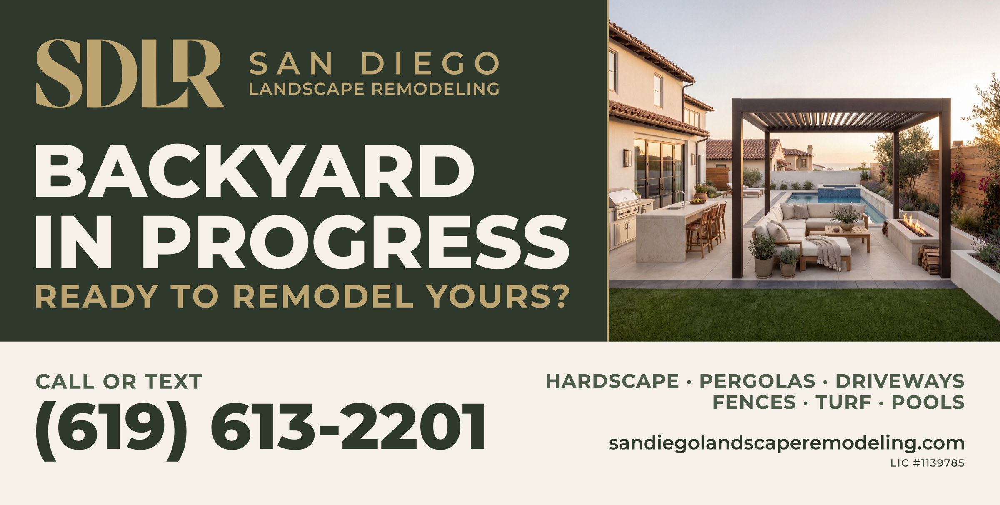
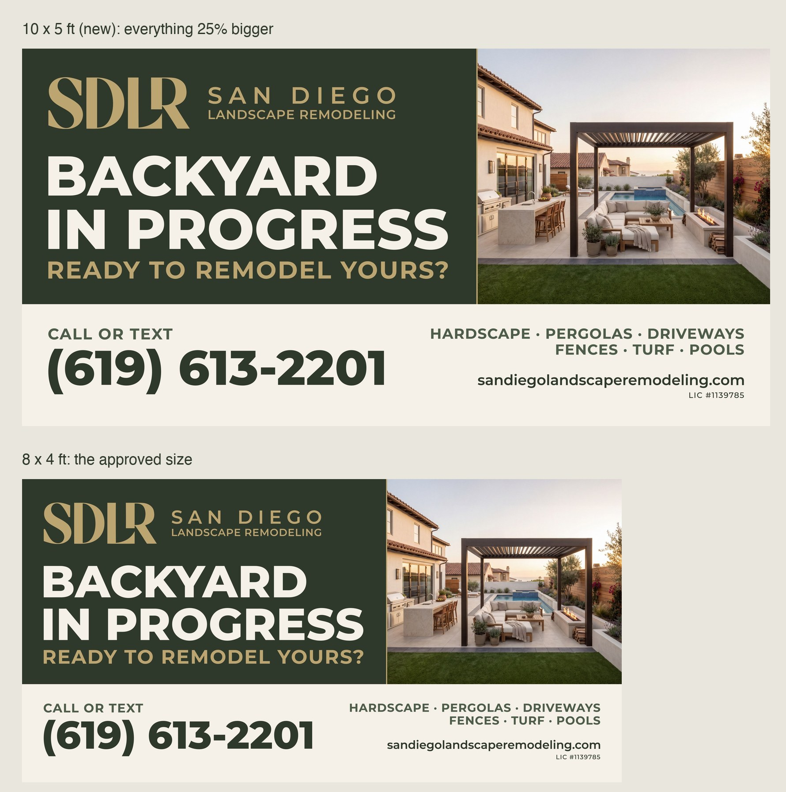

The design you picked on November 21, unchanged, with two updates: the phone number is now the jobsite sign line, (619) 613-2201, and there is a new 10 × 5 ft size. These are the files to send to the printer. Not ordered yet.


| 10 × 5 ft | 8 × 4 ft | |
|---|---|---|
| Best when | The fence is about 6 ft tall and faces a wide or fast road. | Almost any fence, and tight spots. |
| Headline | About 6.3 in capitals | 5.1 in capitals |
| Phone | 5.5 in | 4.4 in |
| Photo sharpness | About 180 dpi | About 224 dpi |
| PDF page | 121 × 61 in (trim 120 × 60) | 97 × 49 in (trim 96 × 48) |
A 10 × 4 ft file with the new number is in the downloads too, in case a printer cannot print 5 ft tall in one piece. It keeps the 8 ft banner's letter sizes and gives the extra width to the photo.
| File | PDF with 0.5 in of bleed on every side. Type and logo are vector with fonts embedded; the photo is embedded. |
| Material | Mesh vinyl. It lets wind through, so it is safe on a chain-link or temporary fence, and it is matte, so there is no glare. Printed one side. |
| Finishing | Sewn, reinforced hems and grommets every 2 ft. These banners move from job to job, and taped hems fail first. |
| Hanging and storing | Ball bungees through the grommets. Store it rolled, print side out, never folded. |
| Colors | Forest #2E382B, sage #4E5D4A, gold #BDA572, paper #F5F1E8. Ask for a printed proof and check the greens don't go grey or the gold brassy. |
| Before it goes up | Get the homeowner's OK in writing: it is their fence. Ask the printer whether 5 ft tall prints in one piece. |
The same files, plus 100 dpi images for printers that only take pictures, are in Drive under
02 Clients/san-diego-landscape-remodeling/assets/print-ready/_ORDER-2026-11-26/4 Fence banners/.